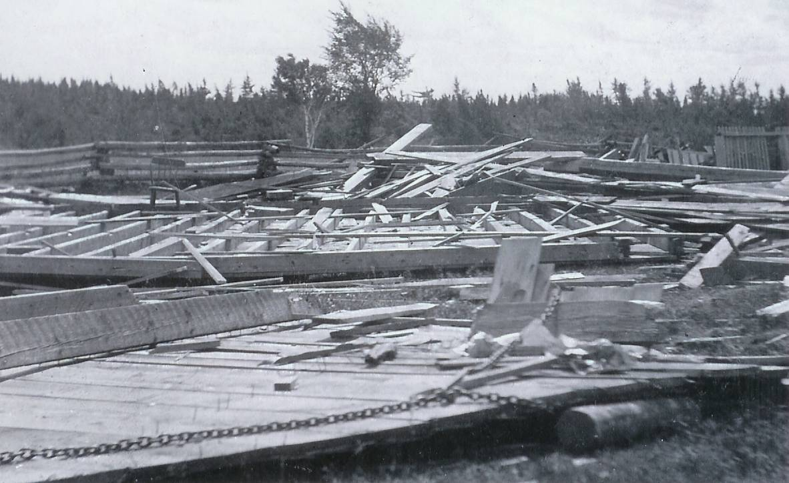
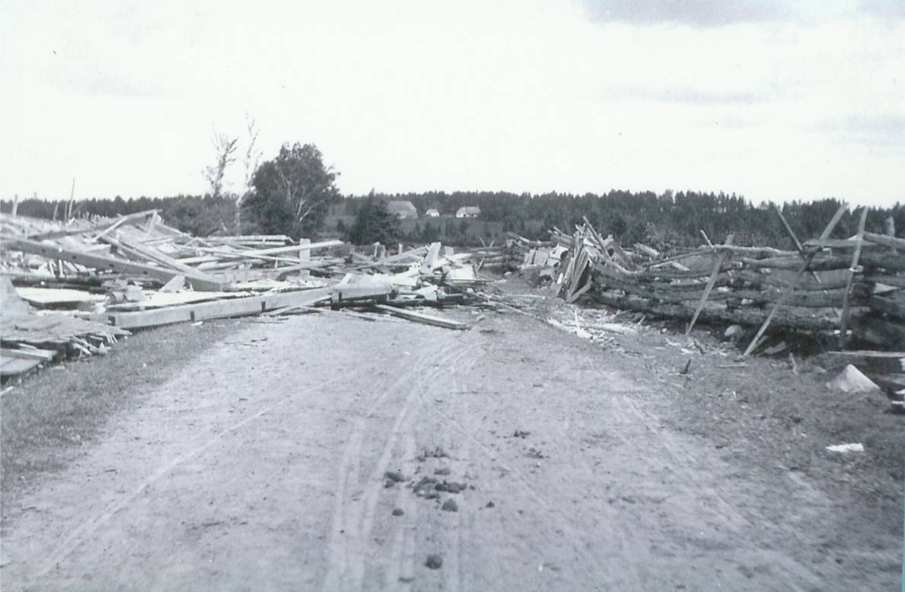

The Family Chronicle
No. 104 September 18, 2005
____________________________________________________________________
Tornado Strikes Upper Black River

Upper Black River Hall

Upper Black River School

Robert MacNaughton beside barn
Upper Black River was struck by a tornado in 1903 or 1904, or both. A reference in the Chatham Gazette of May 18, 1932 refers to the tornado demolishing the Upper Black River Community Hall “twenty-eight years ago”. My photos, courtesy of Everard and Bertie MacLean give the date as 1903. My Mother, who would have been 13 or 14 at the time, remembered the tornado although, by then, the Watling family was living at Little Branch.
The top photo shows the remains of the community hall in Upper Black River following the tornado of 1904. The hall was located at or near the intersection of the Richibucto Road and the road down the North side of the Black River.
The second photo shows the remains of the school. I think that is the Rankine Maclean home in the background.
The third photo shows Robert MacNaughton standing besides the remains of his barn. Robert MacNaughton was …
School Days
As I write this, youngsters are preparing to start or return to school. I’m reminded of the song:
“School days, school days,
Dear old Golden Rule days
You were my Queen in Calico
I was your bashful, barefoot beau
When I wrote on my slate
‘I love you so’
When we were a couple of kids.
Landmarks Disappear
A couple of landmarks are gone from the landscape of Black River. The home, as I first recall it, of “Arch Hughey” Cameron, later the home of Add and Pearl (Young) Cameron was destroyed by fire; fortunately no one was injured. Two doors to the east of the Cameron home, the home of James T. D. Watling is being razed; it has been vacant for some time.
Irene (MacDonald) LeBlanc
The recent death of Irene MacDonald reminded me that she taught at the school in Kouchibouguac Village in 1947-48 while I started my teaching down river at the Middle Kouchibouguac School. Many a Friday evening we found ourselves standing on the side of the road just north of the bridge thumbing a ride north to the Black River corner.
Follow-up
Brother Ken reminded me that the barn belonging to James Godfrey was a hay barn not their main barn. He also said that when my brother John was with Dad and I in the Victoria Bridge during the tornado and that some of the braces in the bridge crashed to the floor around us. In addition, the horses got scared and John got off the wagon and led the horses through the reminder of the bridge to the approach on the Frank MacDougall side of the bridge.
Confirmation
In response to a query, Jack Wilson provided the following:
I had heard about the tornado, which destroyed the school, but didn't realize it had destroyed a barn also.
The school in question was Glenelg #1 on the North Black River Road, near the intersection of Highway 11. The Robert MacNaughton place would be immediately adjacent to the school, right on the corner.
When I attended school there in my youth, the place was owned by Stuart MacNaughton who was Robert's son. We used to get our drinking water there for the school.
Robert MacNaughton (1842-1912) was a son of Malcolm MacNaughton (1797-1865), one of the original MacNaughton immigrants to Canada c1817.
The Chronicle is an occasional newsletter published by Don Glendenning and posted on the family website. It is intended to share information about my family, community and the times in which I grew up. While every effort is made to be accurate, errors are likely to occur. Comments, enquiries and information may be sent to 62 Queen Elizabeth Drive, Charlottetown, PEI, C1A 3A9. Tel: 902 892 5859. Email: dglende@auracom.com Web: www.glendenning.net/don